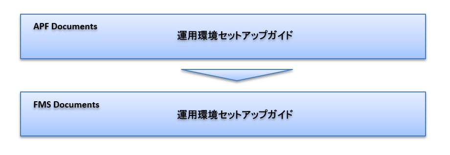

セットアップ概要¶
Biz∫会計セットアップ作業フロー¶
Biz∫会計セットアップ作業の全体の流れを以下に示します。


コラム
作業前に各セットアップ手順を参照し、作業の流れを確認してください。
着手条件¶
Biz∫APFから提供される以下のマニュアルの作業が完了している必要があります。
Biz∫APF Documentation
前提事項¶
本書では、以下の条件に当てはまる構成についてのセットアップ手順を解説しています。
シングルテナント（テナント内に会社が１つである）
コラム
グループ連結オペレーションを利用する場合、全テナントで一意となる会社コードを登録してください。複数テナントで同じ会社コードを利用すると、データの不整合や予期しないエラーが発生します。
既存システムからのデータの移行がない、新規構築である
注意事項¶
本書では、前述の作業フローに従って作業を進めてください。
特別に記載のない場合、後工程の作業は前工程の作業が完了している前提で記載しています。
IM-Workflowなどオプション扱いのプロダクトについては、必要のない場合には作業をスキップして次工程へ進んでください
オプション扱いの場合には文中にも記載しています。
サンプルデータ環境の構築は、当マニュアルで運用環境のセットアップが終了した後にサンプルデータを追加していただく手順になっています。
サンプルデータ環境構築用の資材は別途、弊社ダウンロードサイトより取得し、資材内の手順書を元にサンプルデータの投入を実施してください。
コラム
サンプルデータ環境構築の場合は、Biz∫APF データ連携 の設定をするでは、「データベースを登録する」および「テナントを登録する」、「会社を登録する」の作業は行わず、サンプルデータの投入を実施してください。
Biz∫会計導入マニュアルとの関連¶
Biz∫会計の運用環境を作成するにあたり、当マニュアルの作業に引き続き、『導入マニュアル』に従って各種マスタの設定作業が必要です。（サンプルデータ環境構築の場合は、当マニュアルによるセットアップ・設定の実施後に、『導入マニュアル』の作業は行わず、サンプルデータのセットアップを行ってください。）
当マニュアルは、一般的に基盤SEがサーバ管理者として、サーバ内で行う作業が主であるのに対し、『導入マニュアル』では、業務SEがBiz∫の画面を操作しながら業務設計内容を反映していく作業を対象としています。
請求書の帳票レイアウトファイルの変更¶
業務要件により請求書のレイアウトを変更する場合、以下の設定を別途行う必要があります。
Biz∫会計とBiz∫販売を連携し、Biz∫販売 用の請求書で運用する場合、逆引き(Cookbook)のBiz∫販売連携をご確認ください。